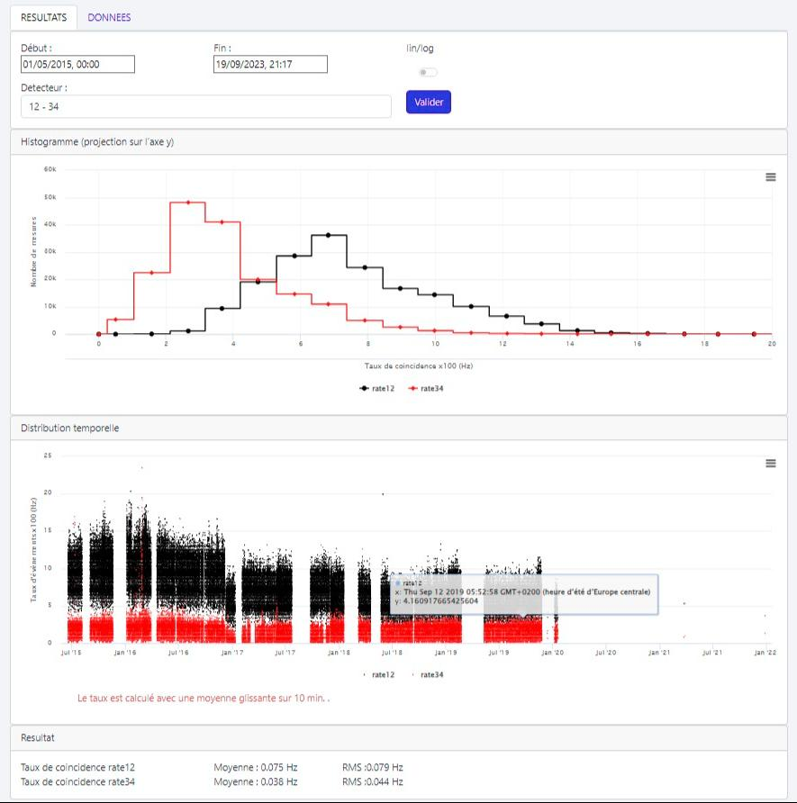
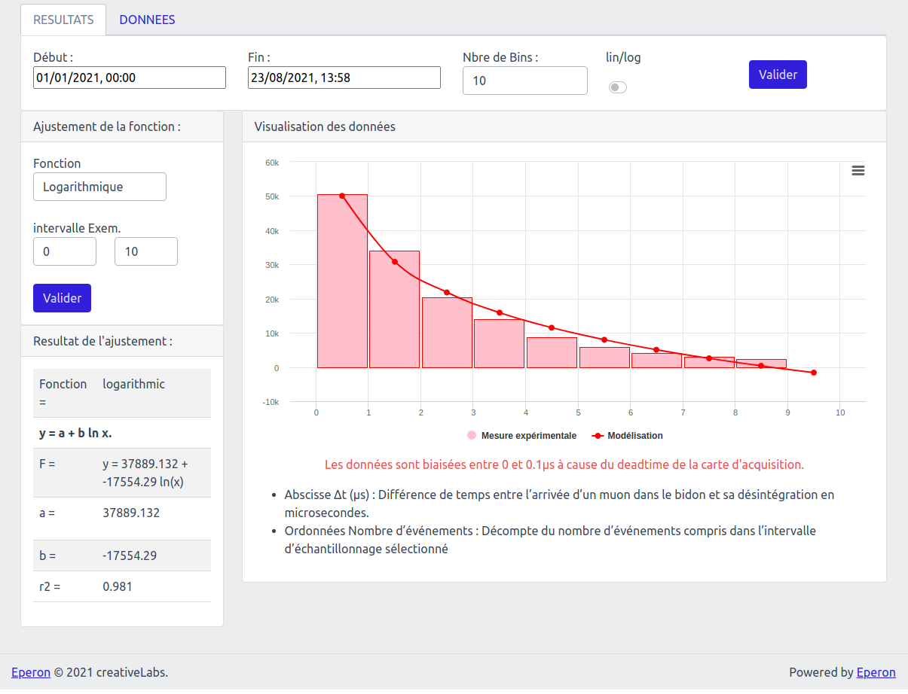
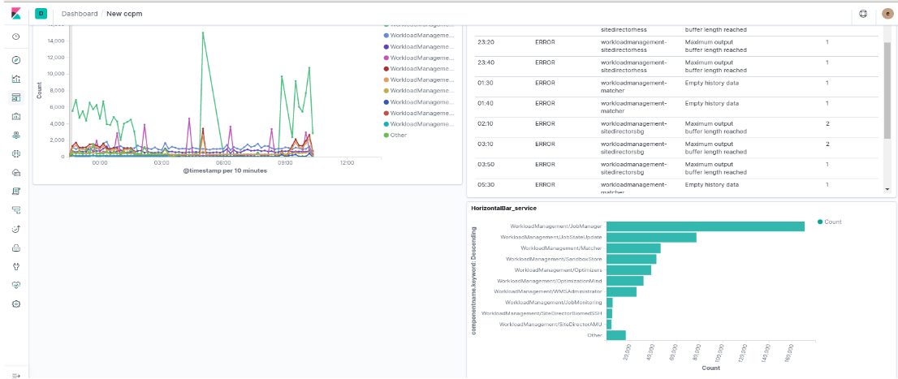
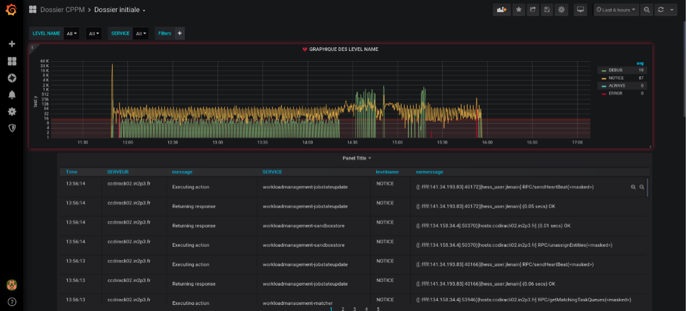
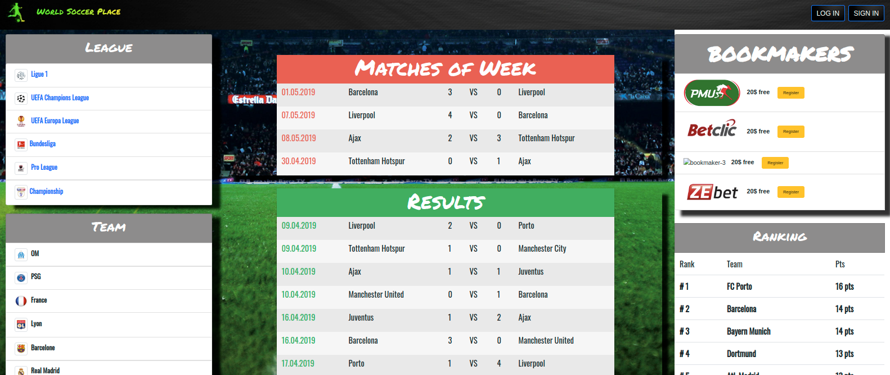
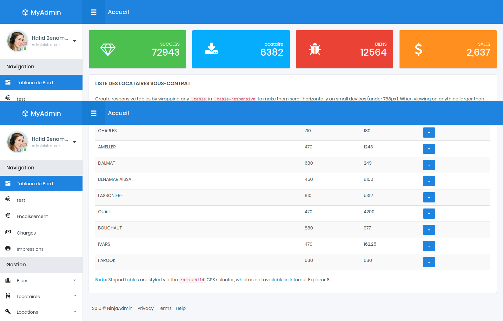
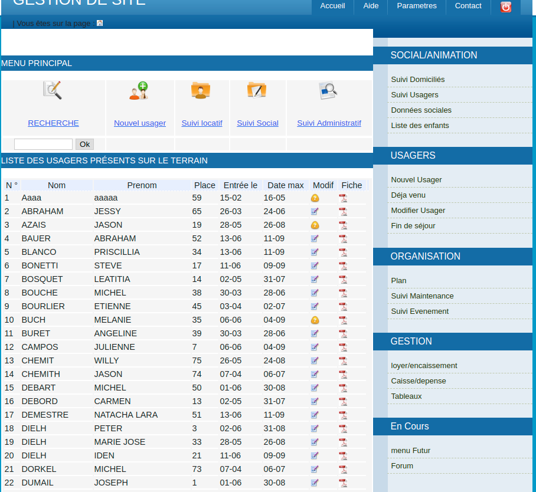
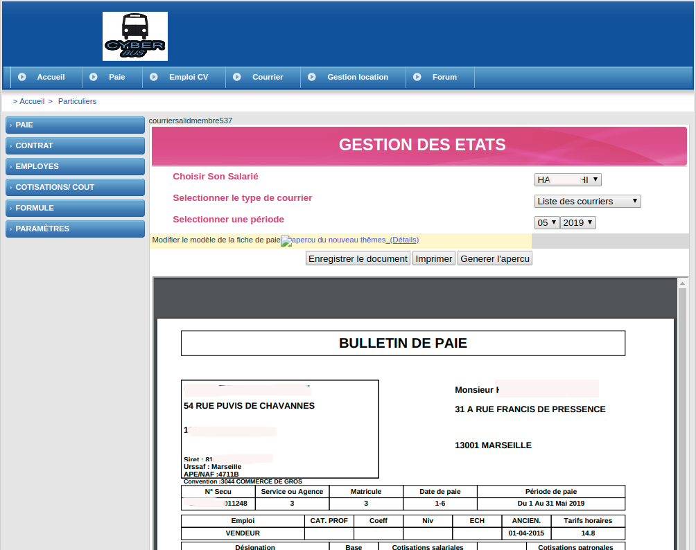
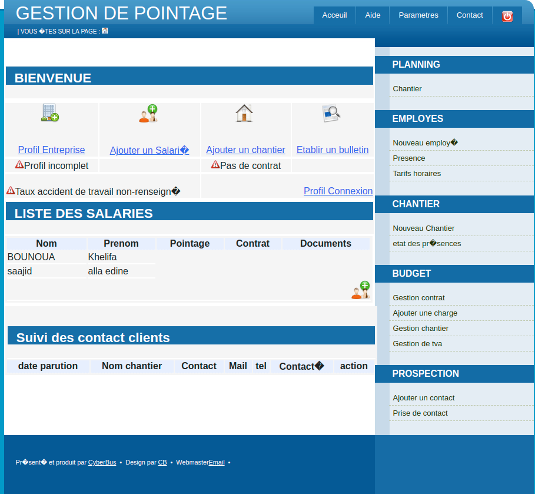
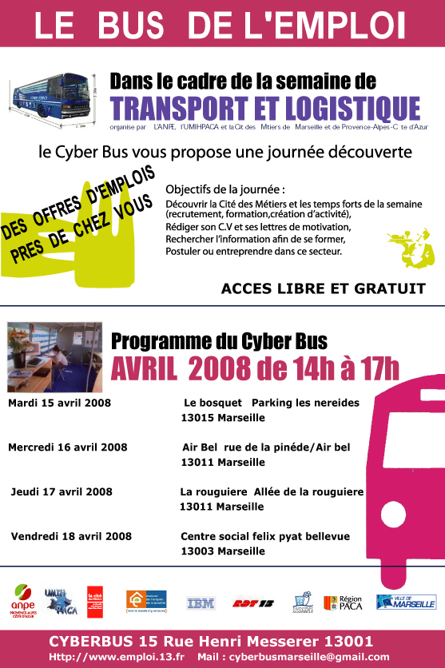

Projets Marquants
🛰️ SVOM / COLIBRI


Projet spatial franco-chinois
✓ Gestion de télescopes robotiques pour la détection de sursauts gamma
✓ Conception de plateformes web scientifiques (GIC)
✓ Automatisation de chaînes de traitement d'images astronomiques
✓ Dashboards temps réel (qualité du ciel, capteurs)
✓ +1 million d'entrées gérées
🔬 e-PERON
Plateforme éducative scientifique
 ✓ Interface d'accès aux données sur les rayons cosmiques
✓ Outils d'analyse pour enseignants et élèves
✓ Graphiques interactifs (Chart.js, D3.js)
✓ 50+ enseignants, 300+ élèves utilisateurs
✓ Optimisation pour millions de lignes de données
📊 DIRAC - Monitoring Big Data
Calcul distribué physique hautes énergies
 ✓ Installation et configuration ELK Stack
✓ Supervision centralisée pour 40+ services
✓ Dashboards personnalisés par équipe
✓ Analyse et visualisation de logs complexes
✓ Formation des collaborateurs à l'outil
⚽ World Soccer Place
Projet Wild Code School
✓ WebApp de référencement football mondial
✓ Base de données équipes et joueurs internationaux
✓ Intégration API données en temps réel
✓ Interface responsive et moderne
✓ Projet en équipe (méthodes Agile)
📱 Coiffinthestreet
Application Android
✓ App pour coiffeurs bénévoles
✓ Géolocalisation et mise en relation
✓ Système de réservation intégré
✓ Interface intuitive et accessible
🏆 HANDIPACA - Hackathon DataWeek
2ème place - 24h de développement
✓ Application Android d'accessibilité
✓ Solution innovante en 24h
✓ Travail en équipe sous pression
✓ Présentation devant jury professionnel
🏠 Gestion Locative Immobilière
Système de gestion complet
 ✓ Suivi loyers en temps réel
✓ Génération documents (quittances, états lieux)
✓ Relances automatiques
✓ Dashboard de pilotage
💰 Bulletin de Paie en Ligne
Solution de gestion sociale
 ✓ Calcul automatique des paies
✓ Contrats aidés (CAE), réduction Fillon
✓ Gestion des primes et cotisations
✓ Export comptable automatisé
Bus informatisé itinérant (2007–2011)
Création et développement d’un bus informatisé itinérant à Marseille.
✓ Analyse des besoins, coordination et suivi technique.
✓ Installation réseau (TCP/IP, Wi-Fi, 3G+), serveurs Windows/Linux, sécurité système.
✓ Animation et formation multimédia pour le public et les seniors.
✓ Présentation du projet aux partenaires institutionnels et financiers.